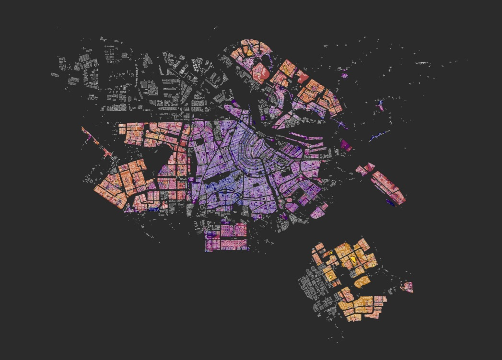

Food

Amsterdam has a lot of places to eat. Wheter you like rice, chicken or a hamburger, Amsterdam has got it all. There is so much to choose from like University restaurants where you can have dinner at an affordable price, to world class michelin-star restaurants like ‘’BRIDGES’’ or ‘’THE DUTCHESS’’.
Discover...
Lunch is the time people have a break from work. You can chill with your family or friends, or just grab a fast bite by yourself. Amsterdam offers a lot of lunchrooms to choose from. You can have a quick sandwich at Starbucks, or you can make it yourself comfortable and choose for a place like Stach. It’s your choice!
Discover...
Almost everyone needs a good cup of coffee to start off the day right. Wheter you want cappucino, flat white or organic latte macchiato: Amsterdam offers lots of inviting coffee places where you can linger over a good cup of coffee.
Discover...
Map of Amsterdam:
